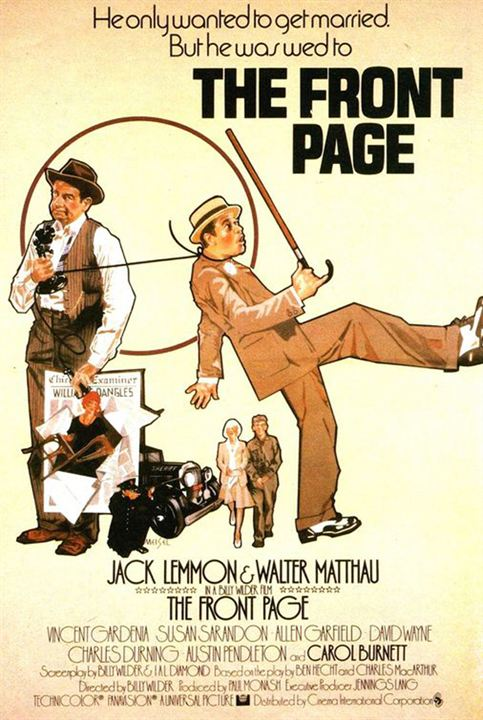

 El reportero del Chicago Examiner Hildebrand "Hildy" Johnson (Jack Lemmon) acaba de dejar su trabajo para contraer matrimonio con Peggy Grant (Susan Sarandon) y emprender una nueva carrera ante la desesperación de su director Walter Burns (Walter Matthau), un hombre despiadado y egoísta, capaz de cualquier cosa por una noticia. Hildy está en la cárcel despidiéndose de sus colegas en la información de tribunales cuando Earl Williams (Austin Pendleton), un condenado por asesinato, se escapa del corredor de la muerte momentos antes de su ejecución. Earl es un pobre diablo, un tipógrafo de izquierdas cuyo único delito había sido rellenar galletas de la suerte con mensajes pidiendo la libertad de Sacco y Vanzetti, pero la prensa amarilla de Chicago le ha retratado como un peligroso activista enviado por Moscú, y como consecuencia los ciudadanos están ansiosos por verle ajusticiado.